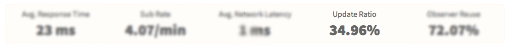
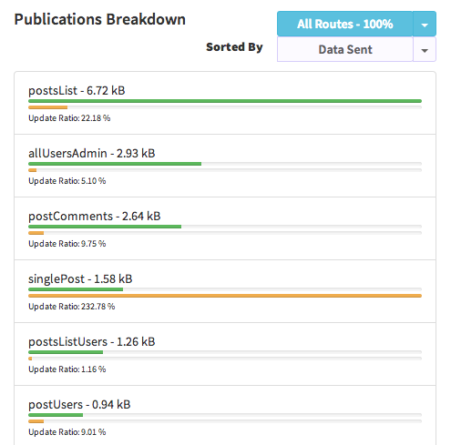

Better utilization of server memory

Meteor maintains a copy of all your data sent to each client in the memory. It will be used to detect exact changes which needs to be sent to the client. But if you've a lot client or sending a lot of data, your app will drain server Memory.

We'll show you a very unique metric called Update Ratio which shows you the percentage of data change compared with all the data sent to the client.
If the Update Ratio is low, you actually don't need to keep them in the server Memory. So you can pick publication which sends a lot of data and having low update ratio; then apply our guides on how to avoid caching data on the server.
Read More